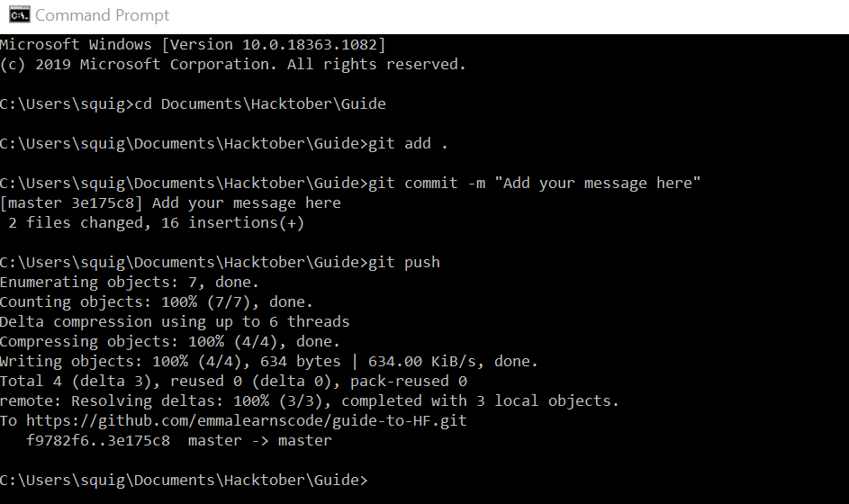
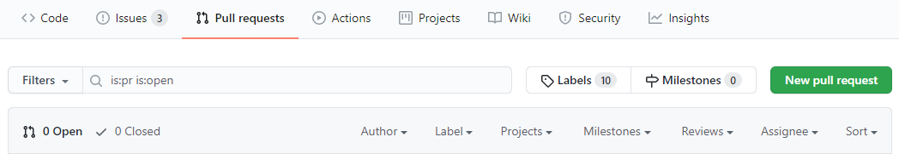
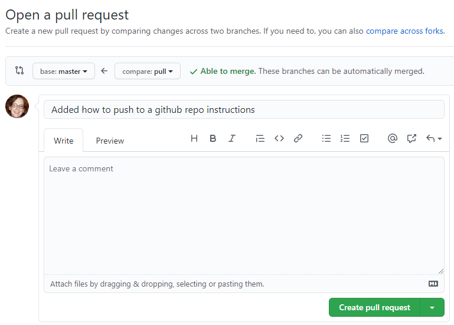
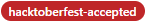

Pushing your Code to your Forked Repo
Before making a pull request you have to get your code from your computer back up to your forked GitHub repository. To do that do the following in the command line:
- Make sure you are in the project working directory. To do that use the command
cd folder-name\folder-name - There are three commands you need to use in the following order
git add .
git commit -m "Add a short message about the changes you made"
git push

Making your Pull Request
- Go to your forked repository. There you should find the "Make New Pull Request" button in green. Click on the button. 
- There you will see a screen asking you to compare two repositories. Make sure the base repository is the original https://github.com/emmalearnscode/guide-to-HF and the compare button shows the name of your forked repository. 
- Add any messages or comments and press the green "Create pull request button
- And that's it! Now you sit back happily and wait for your PR to be reviewed. It can take some time for your pull request to go through as all will be manually reviewed before being accepted
- Your pull request will be marked with the  label when merged.